Overview
以文化调研为基础，提取地景、活动、角色和叙事节点，并把它们组织成可被观看和扩展的视觉系统。
Slide 16:9 - 1
现在这是一个单页滚动作品集。你可以把最重要的项目顺着往下排，让别人直接从上往下看完。
01
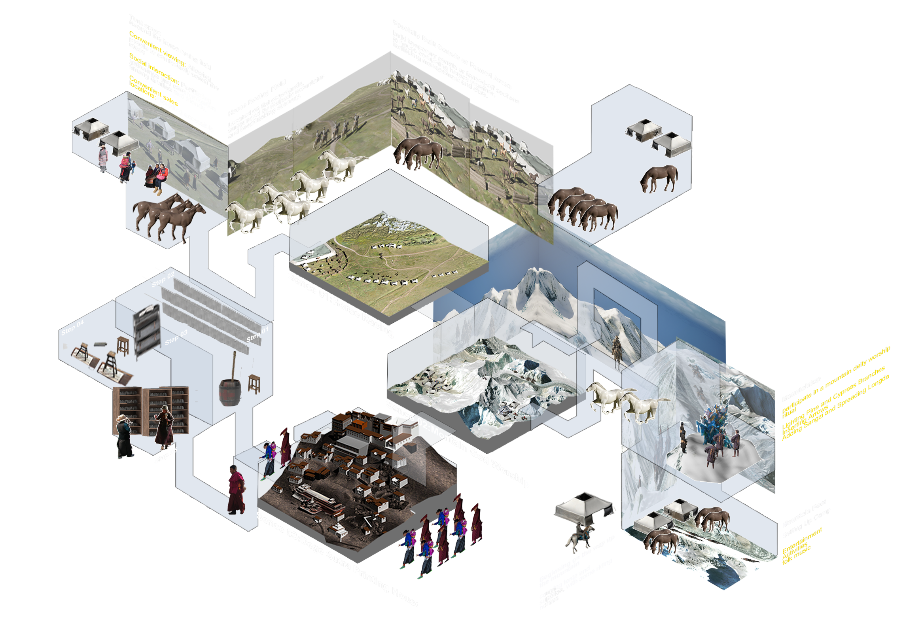
以文化调研为基础，提取地景、活动、角色和叙事节点，并把它们组织成可被观看和扩展的视觉系统。
通过路线分析、空间分区、场景设定和角色编排，把研究内容转译成适合后续影像发展的概念图谱。
最终输出不仅是调研图和叙事框架，也为后续 AI 概念视频提供了镜头语言、场景结构和视觉方向。
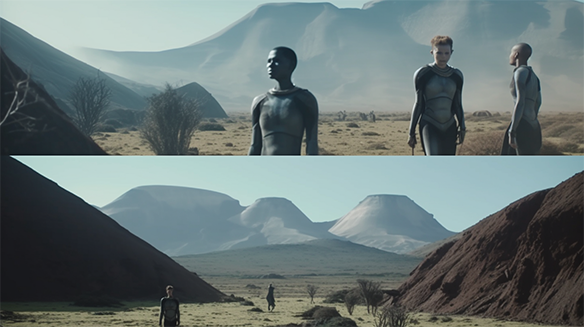
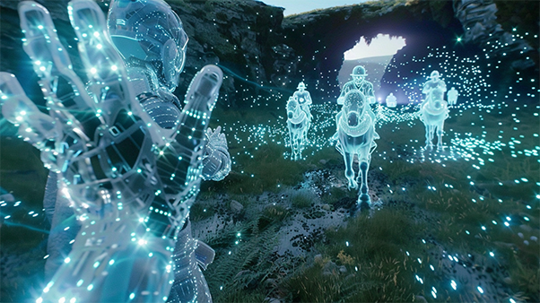
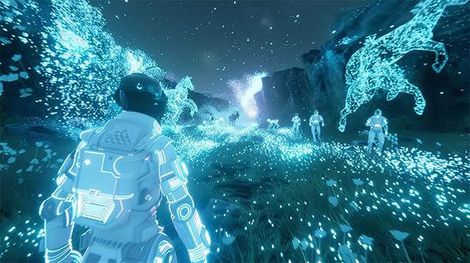
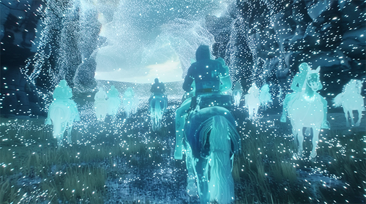
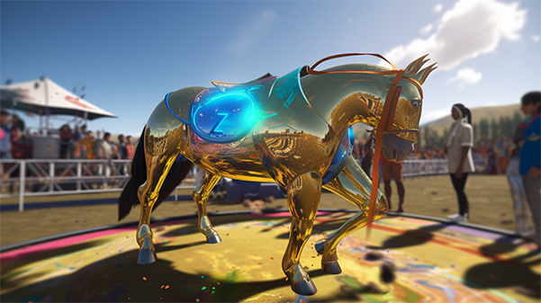
Storyboard
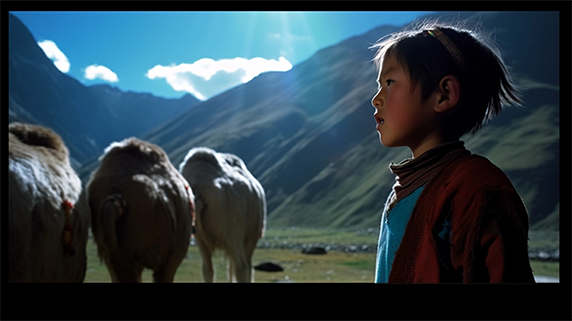
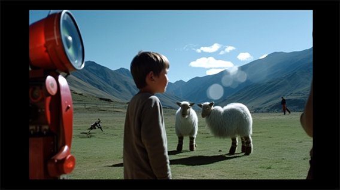
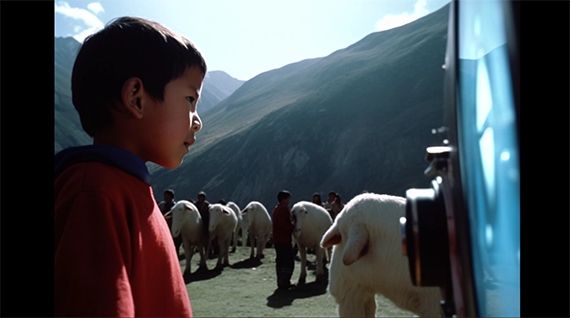

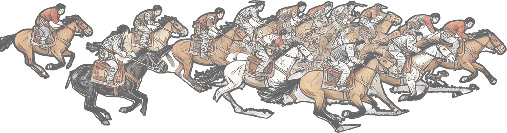
02
写项目初始问题，比如信息层级混乱、品牌感不清晰或转化效率偏低。
概括你用了哪些关键设计动作去解决问题，例如重组结构、统一组件或强化叙事。
写清楚最终交付内容，例如高保真页面、设计规范、前端落地或演示原型。
03
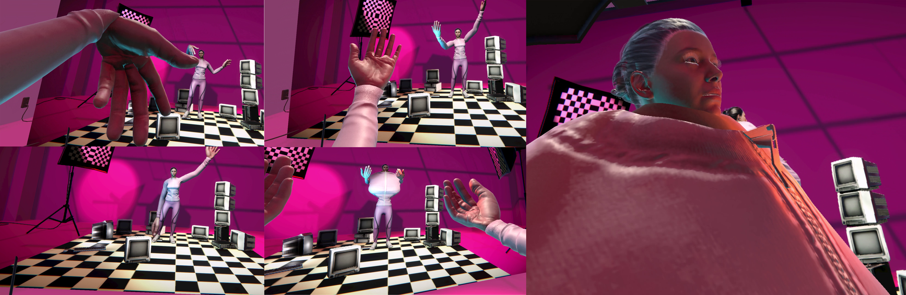
可以写空间叙事、沉浸感来源，以及你希望观众如何进入这个虚拟场景。
说明使用的软件、引擎、交互方式和视觉资产，比如 Unity、3D 角色、手势交互等。
描述最终呈现形式，比如头显体验、现场装置、录像记录，或线上交互演示。
04
通过把相册从平面物件转成可进入的空间，重新组织照片、记忆和观看关系。
空间里结合了书架、照片装置和漂浮物件，让档案感和沉浸感同时存在。
观者像在记忆内部移动，而不是只浏览图片本身，这让项目更像一种叙事式展览。
05
用 VR 场景模拟“修手机”的工作台体验，让用户在虚拟环境中进入维修语境。
通过桌面、显示器、座椅和室内陈设建立一个带有工作室感的空间氛围。
作为小项目，它更适合展示你的交互尝试和空间表达，而不是展开成很长的 case study。
About
这里可以换成你的个人介绍、创作方向、学校或工作状态、联系方式。现在的结构是单页滚动版， 所以很适合让访客从第一页一路看到最后，不需要再额外点击。